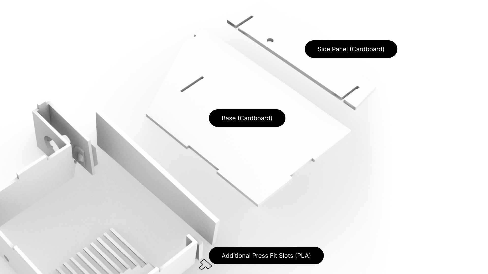

Final Project: Music Box
For my final project, I decided to create a music box and test efficacies of digitally fabricating musical instruments or artifacts.

For this project, I used techniques that included 3d printing, grasshopper, laser cutting, and press-fit construction.
Detailed project specifications can be found in my Final Project Proposal.
I based much of my designs from a previously existing stl online of a Super Mario Music Box to make
this assignment easier.
Customized Music Cylinder
The music cylinder was programmed in grasshopper. The pointcloud generated from my notes CSV was then be transformed
and applied to a cylinder solid polysurface, which createed extrusions on the cylinder for the note delineation.
Originally, I wanted to leverage flat.io's API to convert my custom music notation into data points using Python so that
the translational work would become a lot easier. However, due to time constraints, I conducted manual calculations in spreadsheet
format.
After doing some calculations in Google Spreadsheet, I mapped out the points into a coordinate point system in Grasshopper. I created a mesh that resembles the tick marks on the music cylinders and assigned them to the points, which then was mapped onto a cylinder using the FlowOnSrf command in Rhino.
Cylinder Mesh & Fit
I wanted to make the music box customization easier - I wanted to allow someone else to easily print out and assemble the music box. The stl that I used was difficult to assemble, and lacked some aspects of easy construction.
To make assembling easier, I modified the mesh in the stl that allowed the music cylinder to stay in plalce with a dowel-based system. With this, the user can simply remove the cylinder from the slots inserted.
For the cylinder to rotate without the compression-based system of the original stl file, I decided to create a slot within the cylinder that would allow for a dowel to be inserted. The dowel also included extensions to allow the cylinder to rotate around, as the cogs were already attached the to the cylinder itself.
Music Box Exterior
Originally, I planned to have the whole exterior of the music box constructed in cardboard; however, due to the cardboard not being able to handle forces and stresses produced by cogwheel rotation, I decided to adjust and took a hybrid appraoch.
After modeling in Rhino, I laser cut the cardboard base and side panel. This hybrid approach of PLA and cardboard exterior allowed the music box to still handle the forces produced by cogwheel rotations.
Music Box Comb
I had originally planned to order a music box comb instead of making one myself by milling out brass sheets. However, the music box comb that arrived was too small to be feasibly fit into the 3d printed music box exteriors. To save time, I decided to use the originally 3d printed music box's comb. I was not able to meet my stretch goal of milling out my custom music box comb.
The downside to this approach is that I wouldn't be able to tune the comb at all. I did not account for the ways in which I could tune the comb, but using approaches like metal bar to stop each tick of the comb could potentially be helpful in the future.
Music Box
The final construction of the music box is shown above. It is extremely out of tune, but does play various notes, which I think could be a test on the efficacy of printing out musical artifacts through digital fabrication methods.
Documentation for Final Project:
Notion Docs for Contingency Plan & Bill of Materials
Rhino File
Grasshopper File
Illustrator Laser Cut File
Music Box Construction Video
Credits:
Super Mario Music Box